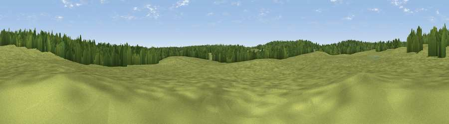

Viewpoint near Burley
#45848 in England · top 97% of its area beats it · near BurleyWhere it is
The exact computed spot (SU 21360 04611). Click the marker for map links.
The view, rendered

A 360° render of this exact spot computed from the terrain model, tree cover and land cover — summer colours, afternoon light, calibrated against photographs of famous viewpoints. Real trees, hedges and buildings will differ in detail.
The panorama
Grey silhouette: terrain skyline in each direction (720 bearings, Earth curvature and refraction included). Dashed green: skyline with trees (+15 m) and buildings (+8 m) as obstacles. Blue strip: how far the ground is visible on each bearing.
Where the view opens
Wedge length = distance to the farthest visible ground on that bearing (vegetation-aware). Rings at 10, 25 and 50 km.
What fills the view
71% grassland · 28% woodland
Angular shares of the visible panorama (visual magnitude), not map area. Landscape diversity 0.27 (0–1 Shannon).
Key numbers
More beautiful places nearby
The staircase of upgrades: each row has a higher view potential than everything closer. Driving times are estimates from straight-line distance, calibrated against real road routing — check an actual route before setting out.
| Place | Direction | Drive | Score |
|---|---|---|---|
| Viewpoint near Burley | SW · 2 km | ~5 min | 41.0 |
| Viewpoint near Hightown | W · 2 km | ~6 min | 43.3 |
| Viewpoint near Emery Down | ENE · 9 km | ~17 min | 44.9 |
| Viewpoint near Hurn | SW · 11 km | ~21 min | 53.7 |
| Warren Hill | SSW · 15 km | ~26 min | 60.1 |
| Viewpoint near West Grimstead | N · 20 km | ~33 min | 62.7 |
| Viewpoint near Martin | NW · 21 km | ~35 min | 64.6 |
| Viewpoint near Cranborne | NW · 21 km | ~36 min | 65.0 |
50.84064, -1.69801 · source: osm peak · position refined by local search. Computed location — check access rights before visiting.